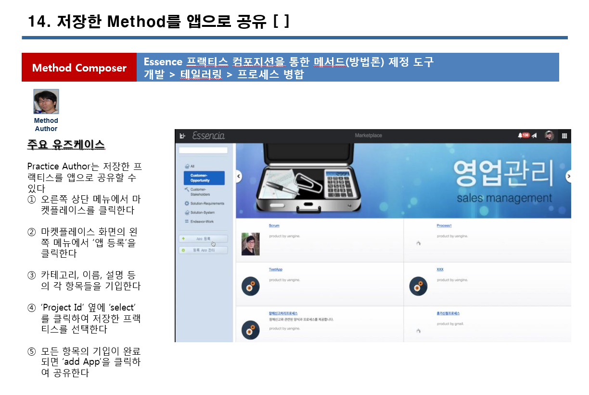
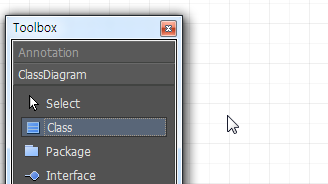
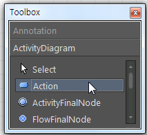
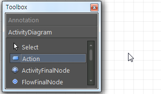
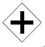

Essencia사용자 가이드
Version 1.0
이 장에서는 Essencia의 전반적이고 개략적인 내용들을 다룹니다. Essencia의 간략한 소개, Essencia의 전반적인 구성들을 설명합니다.
Essencia 개요
시스템 요구사항
Essencia(이하 에센시아)는 소프트웨어 공학 방법론을 정의하기 위해 SEMAT에서 제정한 방법론 제정 표준(2014년 상반기 OMG의 정식 표준)인 Essence(이하 에센스)를 지원하는 방법론 재정의 및 실행지원 솔루션입니다.
별도의 설치 없이 인터넷 연결만으로 다양한 단말기에서 실행할 수 있는 웹 기반으로써, 접근의 편의성을 향상시켜 줍니다. Essence 표준 언어를 다양하게, 손 쉽게, 편리하게 재정할 수 있습니다. 또한, 산출물 추적성과 상호의존성 파악이 가능합니다.
방법론 재정의를 위한 프로젝트 모델링 기능을 제공하며, 유엔진 BPM을 통합하여 요소들끼리 중복 파악과 통합연계 가능합니다. 산출물의 모니터링과 분석이 가능함으로써 추적성과 투명성이 개선됩니다. 템플릿과 실행 지원 솔루션 도구를 제공하여 팀의 프로젝트 목표를 빠르게 식별, 프로젝트를 완료하기 위한 리소스 타입을 결정, 프로젝트의 마일스톤을 끌어냅니다.
에센스를 기반하여 소프트웨어 개발 프로젝트의 계획을 산출 방법을 제공하고, 방법론을 요구사항에 맞게 커스터마이징이 가능하므로 프로젝트조건에 적합한 실행을 지원하며, 더 나아가 비즈니스의 향상을 지원합니다. 크고 작은 소프트웨어 프로젝트를 효율적으로 관리, 실행할 수 있으며 기술투자의 최대화를 지향합니다.
Essencia를 사용하기 위해서 귀하의 시스템이 갖추어야 할 최소한의 요구사항을 나타냅니다.
Browser : Microsoft® Internet Explorer 8.0 or higher, Chrome, FireFox, Opera
Mouse or other pointing device
이 장에서는 Essencia을 효과적으로 사용하기 위해 필요한 필수적인 개념들을 소개합니다. Essencia에서 사용되는 기본 개념인 에센스와 메타모델에 대해 알아보고, 각 개념들이 사용되는 컴포넌트와 액터를 각 개념을 이해하는데 도움을 주는 용어집을 구성하여 기술하였습니다. 또 확장 모듈과 거기에 포함되는 접근법, 프로파일, 프레임워크 등에 대한 개략적인 개념을 설명합니다.
에센스, 에센스 메타모델
액터와 컴포넌트
용어집
Essencia는 Essence를 지원하는 방법론 재정의 및 실행지원 솔루션입니다. Essence(에센스)는 Practice(이하 프랙티스)와 Method(매서드)를 나타내는 표기법 기반의 모델입니다.
에센스는 Practice(이하 프랙티스)와 Method(매서드)를 나타내는 표기법 기반의 모델로 일관성을 유지하며, 프랙티스를 사용하여 새로운 소프트웨어를 개발할 때 다양하게 응용이 가능하여 특정 조직에 최적화된 소프트웨어를 생성 할 수 있습니다. OMG 에센스는 현존하는 소프트웨어 프로세스의 다양성을 고객의 요구사항에 따라 프랙티스를 최적화시키고, 누구나 쉽게 방법론 조합을 통하여 비용과 시간을 절감하기 위해 개발 되었습니다. 새로운 매서드를 매핑 하는데 있어서 에센스의 표준화 된 Kernel(이하 커널)과 Language(이하 언어)를 이용하여 매서드를 구성하는 프랙티스를 재구성 할 수 있으며, 에센스에 사용되는 커널은 프랙티스의 기본이 되는 요소들입니다.
에센시아는 에센스 specification의 Practice description conformance Level 3을 지원하는 웹 기반의 도구로 에센스를 지원하기 위하여 그림 1과 같은 메타모델로 정의할 수 있습니다.
그림 1.
에센시아 메타모델
구성요소와 그의 관계들을 설명해주는 구성도
에센시아를 실행시키는 프랙티스는 조직적이고 분리되지 않아 재사용이 가능합니다. 프랙티스는 에센스 커널과 그에 따른 언어로 표현 되고 여러 프랙티스가 모여 매서드를 구성합니다. 프랙티스들은 서로의 중복요소 파악, 프랙티스 간의 산출물 추적성과 상호의존성 파악이 가능하고 프랙티스 통합 연계가 가능합니다. High-level의 메서 드는 여러 개의 lower-level로 구성 될 수 있고, lower-level 메서드 또한 여러 개의 high-level의 매서드로 구성 될 수 있습니다. 에센시아는 Practice Author(프랙티스 저자), Method Author(매서드 저자)와 Project Stakeholders(프로젝트 이해관계자)의 3가지 시스템 액터들이 있습니다.
이 메타모델은 사용자가 하나 이상의 프로젝트에 참여 중이고, 다른 소속의 파트너일지라도 여러 명이 함께 같은 프로젝트에 참여할 수 있다. 에센시아의 특성 중 하나는 순차적으로 Alpha Mapping --> Activity Space Mapping --> Practice Process Design을 할 수도 있으나, 언제든지 되돌아가 다시 설계할 수 있고 역순이어도 상관이 없다. 이 프로세스는 프로젝트 참여자들의 이행을 돕는 소프트웨어 엔지니어링 활동의 오케스트레이션입니다.
|
Essence Language |
Notation |
설명 |
|
Practice |
에센스 커널의 표준화된 언어(alpha, activity, activity space, competency)들로 만들어진 work product, activity와 role들을 매핑하여 가장 기본적인 프랙티스가 되며 노력관점의 소프트웨어 엔지니어링을 이행시키는 도구장치 |
|
|
Alpha |
‘Abstract–Level Progress Health Attribute’의 함축어로 프랙티스의 구성이 되는 객체요소이며 소프트웨어 엔지니어링의 진행 과정을 쉽게 파악할 수 있게 해줍니다. Alpha의 상태 변환에 따라 프로젝트가 특정한 시점에서 건강하게 진행되고 있는지 파악할 수 있습니다. |
|
|
Activity Space |
커널의 세 가지 관점에서 alpha들이 임무를 완성할 수 있는 공간이며 activity를 포함하고 있는 활동요소입니다. Activity space 범위 안에서 알파의 상태변화를 식별하고 상태를 실행하기 위한 과정을 추적함으로써 프로젝트가 건강하게 진행되고 있는지를 파악할 수 있습니다. |
|
|
Activity |
Activity는 커널관점의 상태를 변경할 수 있으며, 여러 개의 산출물(Work Product)을 포함하고 있습니다. |
|
|
Competency |
소프트웨어 엔지니어링을 이행할 수 있는 주 된 역량을 뜻합니다. Competency는 다섯 가지의 레벨로 나뉠 수 있습니다. |
|
|
Work Product |
소프트웨어 엔지니어링 노력의 가치와 관련성의 인위적인 산출물 또는 작업항목입니다. Work product는 문서, 소프트웨어, 테스트 환경이나 트레이닝 같은 다양한 형태로 표현될 수 있습니다. |
에센스를 구성하는 표준 커널은 언어를 사용하는 필수요소가 되는 모델이다. 커널은 고객관점, 솔루션관점과 노력관점으로 분류 된다. 그리고 각 관점에 속하는 에센스를 지원하는 메타모델의 커널 구성요소들에는 언어에는 alpha, activity space, competency로 정의할 수 있다. 이러한 커널의 구성요소들로 에센스 언어를 구성할 수 있고 프랙티스와 매서드를 재구성하여 메타모델을 만들 수 있다.
Alpha는 ‘Abstract–Level Progress Health Attribute’의 함축어로 프랙티스의 구성이 되는 객체요소이고 소프트웨어 엔지니어링의 진행 과정을 쉽게 파악할 수 있게 해주며, 프로젝트의 진행 프로세스에 따라 각 alpha들(stakeholder, opportunity, requirement, software system, work, team, way of working (그림 2.))의 상태를 나타내는 alpha state를 거친다. 이 alpha state들은 프로젝트의 진행 상태를 판단할 수 있는 체크리스트를 각각 가지고 있고 체크리스트를 만족시키지 못할 경우에 언제든지 전 state로 되돌아가 완성시킬 수 있다. Alpha의 상태 변환에 따라 프로젝트가 특정한 시점에서 건강하게 진행되고 있는지 파악할 수 있다.
그림 2.
커널의 세 가지 관점과
alpha들의
관계
Activity space는 커널의 세 가지 관점에서 alpha들이 임무를 완성할 수 있는 공간이며 activity를 포함하고 있는 활동요소이다. Activity는 커널관점의 상태를 변경할 수 있으며, 여러 개의 작업항목(Work Product)을 포함하고 있다. 아래 보기와 같이 activity space들은 각 해당하는 커널의 관점에서 활동이 이루어지도록 한다. Activity space 범위 안에서 알파의 상태변화를 식별하고 상태를 실행하기 위한 과정을 추적함으로써 프로젝트가 건강하게 진행되고 있는지를 파악할 수 있다.
그림
3. 커널의
세 가지 관점에서의 activity
spaces
Competency는 소프트웨어 엔지니어링을 이행할 수 있는 주 된 역량을 뜻하며 competency에는 stakeholder representation, analysis, development, testing, leadership과 management가 있다. 각 competency는 다섯 가지의 레벨로 나뉠 수 있습니다.
레벨 1은 개념에 대한 기본적인 이해도와 주어진 설명대로 이행 할 수 있어야 합니다.
레벨 2는 경험을 통해 개념을 간단하게 적용 할 수 있는 단계입니다.
레벨 3은 특별한 지시 없이 개념을 무리 없이 적용 할 수 있는 단계입니다.
레벨 4는 직접 판단하고 복잡한 맥락에 적용 할 수 있는 단계입니다.
레벨 5는 전문가로 인정받고 기존 개념을 더 넓히며 다른 사람을 도울 수 있는 단계입니다.
그림
4. 커널의
세 가지 관점에서의 competencies
[3가지 요소(Alphas, Activity Spaces, Competencies)에 대한 기본적 상관관계]
프랙티스는 에센스 커널의 표준화된 언어(alpha, activity, activity space, competency)들로 만들어진 work product, activity와 role들을 매핑하여 가장 기본적인 프랙티스가 되며 노력관점의 소프트웨어 엔지니어링을 이행시키는 도구장치이다. 프랙티스는 분리되지 않으며 재사용할 수 있다. 여러 프랙티스가 모여 매서드를 구성하고 매서드는 특정한 엔지니어링의 목적을 이루기 위한 방법론으로 정의 된다. 매서드는 재사용 율이 낮은 방법론이다.
여러 프랙티스가 모여 매서드를 구성하고 매서드는 특정한 엔지니어링의 목적을 이루기 위한 방법론으로 정의 됩니다. 매서드는 재사용 율이 낮은 방법론이다.
에센스 기반의 프랙티스 재정의 및 매서드 조합이 가능하도록 하기 위하여 에센시아의 역할로 다음 5가지 액터를 정의할 수 있다.
|
상위액터 |
액터 명 |
설명 |
정의 및 자격 |
|
Author |
Practice Author |
Essence에 입각하여 기존의 혹은 새롭게 정의하고자 하는 프랙티스를 정의하는 사람 |
에센스 커널과 랭귀지를 사용하여 프랙티스를 정의하는 사람. 방법론 전문가 |
|
Method Author |
Essence기반으로 재정되는 프랙티스들을 조합하여 새로운 방법론을 정의하는 사람 |
프랙티스를 전문가가 정의한 프랙티스 들을 조합하여 기업 내에서 혹은 프로젝트 내에서 사용할 방법론을 정의하는 사람 |
|
|
Project Stakeholder |
Product Owner |
Essence기반으로 프로젝트의 진행 및 건강도를 조망하고자 하는 사람 |
프로젝트를 발주하여 프랙티스와 방법론에 의한 진행상황에 관심 있게 모니터링 하는 사람 |
|
Project Manager |
Essence기반으로 프로젝트의 진행과 감독, 팀 활동을 하는 사람 |
프로젝트 관리의 책임을 가지고 정의된 방법론을 사용하여 프로젝트에 적용하는 사람 |
|
|
Developer |
Essence기반으로 프로젝트 진행단계에서 체크리스트를 확인하여 개발 및 테스트, 팀 활동 등을 수행하는 개발자 |
프로젝트 내의 요구사항을 개발하는 개발자 |
에센시아를 구성하는 각 컴포넌트는 다음과 같이 크게 3개의 컴포넌트로 설계되어있습니다.
|
컴포넌트 |
설명 |
|
Practice Definer |
Practice Author가 사용하여 Essence표준 정의기반으로 프랙티스의 세부 구성요소와 프로세스를 매핑 시켜 재정의 하는 컴포넌트 |
|
Method Composer |
Method Author가 사용하여 Practice Author들이 Practice Definer를 통해 재정의한 Essence화된 프랙티스들을 쉽게 재조합 하여 새로운 방법론을 만드는 컴포넌트 |
|
Practice/Method Orchestrator |
Product Owner, Project Manager, Developer들이 접속하여 정의된 프랙티스와 매서드를 실행시키고 진척도를 확인하고, 해야 할 체크포인트를 부여 받는 컴포넌트 |
각 액터와 에센시아를 구성하는 컴포넌트/시스템의 유즈케이스를 정의하면 표 3.2와 같다.
|
시스템 명 |
설명 |
유즈케이스 명 |
활동 |
액터 |
|
프랙티스 컴포저 |
Essence에 입각하여 기존의 혹은 새롭게 정의하고자 하는 프랙티스를 정의하는 사람 |
프랙티스 정의 |
Essence – Kernel - Alpha : Practice
Component 간의
매핑 Practice Activity 간의 매핑 |
Practice Author |
|
매서드 정의 |
프랙티스들의 조합 & 프로세스 추가 정의 |
Author |
||
|
정의 밸리데이션 / 시뮬레이션 |
정의한 프랙티스와 매서드에 대한 무결성 검증 및 실행 시뮬레이션 |
Author |
||
|
프로젝트 핼쓰 대시보드 |
Essence기반으로 재정되는 프랙티스들을 조합하여 새로운 방법론을 정의하는 사람 |
프로젝트 모니터링 |
프로젝트 모니터링 (대시보드) |
Project Stakeholder |
|
프랙티스 오케스트레이터 |
Essence기반으로 프로젝트의 진행 및 건강도를 조망하고자 하는 사람 |
매서드/프랙티스 실행 |
프랙티스 실행 시작 정보 입력 (프로젝트 정보 및 참여자 역할 매핑) |
Project Manager |
|
프로젝트 워크리스트 |
확인, 체크포인트 실행유무 판단, 체크 |
Project Stakeholder |
대화식 웹 어플리케이션의 제작을 위해 자바스크립트와 XML등의 조합을 이용하는 웹 개발 기법이다.
BPEL은 웹 서비스로 구성된 비즈니스 프로세스 워크플로우를 명세 하는데 사용되는 XML 기반의 언어로서, 여러 서비스를 조합하여 복합 서비스를 만들 때 사용된다. 즉, 복합 서비스는 일반적으로 BPEL을 이용하여 구현될 수 있다. 현재 발표된 BPEL의 공식 버전은 2.0이다.
BPMN은 비즈니스 프로세스의 워크플로우를 표현할 수 있는 표준화된 그래픽 기반 표기법으로 OMG에서 발표되었다. BPMN에는 비즈니스 프로세스의 액티비티(태스크 또는 하위 프로세스), 흐름, 이벤트, 게이트웨이 등에 관련된 표기법을 포함하고 있다. 현재 발표된 BPMN 공식 버전은 1.0이다.
비즈니스의 목적을 달성하기 위해 기술적인 측면에서의 프로세스 액티비티와 이벤트를 결성하고 관리한다.
비즈니스 프로세스는 서비스 소비자 관점에서 정의한 일련의 작업 순서를 나타낸 것으로, 사용자가 비즈니스 조직에서 수행하는 비즈니스 활동 또는 실제 업무를 실체화하기 위해 정의된다. 비즈니스 프로세스는 비즈니스의 주요한 기능을 처리한다.
기능은 서비스에 의해 수행되며, 서비스 소비자의 요구사항을 만족시키기 위해 서비스를 통해 제공되는 것이다. 서비스 소비자는 필요한 요구사항을 기술하고, 단일 서비스는 더 이상 분해되지 않는 기능 단위로, 일반적으로 하나의 스텝에 의해 수행되는 단순한 기능을 가진 태스크를 포함한다.
프로젝트 진행이 완료되었는지 파악하기 위한 표준으로 네 가지 criteria가 있다.
에센스의 표준화된 도형의 요소들로써 커널의 콘텐츠를 표현하고 소프트웨어 엔지니어링을 위한 최적화된 에센스를 제공한다. 커널은 고객관점, 솔루션관점과 노력관점으로 분류된다.
그림으로 된 화면 위의 물체, 틀, 색상과 같은 그래픽 요소들을 기능과 용도를 나타내기 위해 설계된 사용자를 위한 인터페이스이다.
소프트웨어 엔지니어링의 프로세스에서 어떠한 요소들끼리의 가상으로 관계를 찾아내거나 연결시키는 것을 말한다.
하나의 미디어 소스를 여러 미디어 형태로 확장하여 납품하는 것을 말한다.
에센스 커널의 요소들을 매핑을 하여 프랙티스의 세부적인 실행을 돕고 BPMN 모델러를 이용하여 프로세스를 정의한다.
에센스 언어를 사용하여 프랙티스가 실행되기 위한 적합성을 판단하는 표준으로써 세 가지 레벨로 나뉜다; Narrative(1), Practice Description Interchange(2), Practice Actionable and Trackable(3).
World-wide web과 같은 분산 하이퍼미디어 시스템을 위한 소프트웨어 아키텍처의 하나의 형식이자 원리의 모음이다. REST 아키텍처의 형식을 따르면, HTTP나 www이 아닌 큰 소프트웨어 시스템이 가능하며 또한 간단한 XML과 HTTP 인터페이스를 사용한 설계도 가능하다.
컴퓨터 시스템을 구축할 때의 개념으로 업무 처리에 해당하는 소프트웨어 기능을 서비스로 판단하여 네트워크상에 연동하여 시스템 전체를 구축하는 방법론
소프트웨어 시스템을 이용하여 영향을 주고받는 모든 조직이나 사람을 뜻한다. Product owner, 프로젝트 매니저, 사용자, 개발자 등이 여기에 해당한다.
이 장에서는 본격적으로 Essencia에서 매서드와 프랙티스를 생성하고 편집하는 방법에 대해 설명합니다. 또한 데모 시나리오를 통해 Essencia를 활용하는 방법을 알아봅니다.
Essencia 주요화면
Essencia 활용하기
Essencia에 가입된 사용자는 손쉽게 웹으로 접속하여 로그인 후 사용할 수 있습니다.
기존에 마켓플레이스에 등록되어있는 프랙티스를 손쉽게 결제할 수 있습니다. 항상 새롭게 정의하거나, 등록하여 구성하는 것이 아닌, 다른 사용자가 등록한 프랙티스를 결제를 통해 사용할 수 있습니다.
사용자는 자신이 속한 조직에 맞는 Practice를 정의할 수 있습니다.
Practice에 Alpha를 매핑 할 수 있습니다.
등록한 Competency와 Role을 매핑 할 수 있습니다.

사용자는 자신이 속한 조직에 맞는 Activity를 정의할 수 있습니다.
액티비티를 클릭하여 진행상태를 중간중간 미리보기 형태로 점검할 수 있습니다.
사용자는 자신이 속한 조직에 맞는 Method를 정의할 수 있습니다.
작성한 Method를 BPM으로 변환하여 BPM 화면을 구성할 수 있습니다.
자신이 정의한 Method를 마켓을 통해 앱으로 공유할 수 있습니다.

사용자는 Method에 따라 자신의 역할과 업무의 담당자를 정의할 수 있습니다.
카드 프리뷰를 클릭하여 보사용자는 자신이 속한 조직에 맞는 Method를 정의할 수 있습니다.
프로세스를 클릭하면 task 진행상태를 알 수 있으며, 담당자들이 프로세스를 클릭하면 현황을 알 수 있습니다.
사용자는 매서드를 선택하여 알파의 상태를 확인하고 타 프로젝트들과 비교하여 볼 수 있습니다.
저장된 Method를 저장하여 download를 클릭하면 BNF 문법에 근거하여 읽고 쓸 수 있습니다.
다이어그램에는 나타나지 않게 모델 요소만을 생성할 수 있습니다. 이러한 모델은 어떠한 다이어그램에도 나타나지 않으며, 차후에 언제든지 다이어그램에 하나 이상의 뷰를 나타나게 할 수 있습니다.
생성할 요소가 포함될 요소를 모델 탐색기에서 선택합니다.
마우스 오른쪽 버튼을 눌러 [Add] 메뉴를 선택한 뒤, 생성할 요소에 해당하는 메뉴를 선택하거나, 메인 메뉴에서 [Model]->[Add] 메뉴를 선택하여도 동일한 작업이 됩니다.
요소가 생성되어 선택된 요소에 하위에 추가됩니다.
모델 요소를 삭제하는 것은 여러 가지 부수적인 요소들도 삭제됩니다. 따라서, 모델 요소를 삭제하는 것은 신중해야 합니다. 모델 요소가 삭제될 경우 다음 요소들도 삭제됩니다.
포함하는 모델 요소 : 삭제될 모델이 직접 포함하고 있는 모든 모델 요소들도 함께 삭제됩니다.
관계 모델 요소 : 일반화(Generalization), 연관(Association), 의존(Dependency)등과 같이 삭제될 모델 요소에 연결된 관계류 들도 모두 삭제됩니다.
뷰 요소 : 삭제될 모델들에 해당하는 모든 뷰 요소들이 삭제됩니다.
삭제하고자 하는 모델 요소를 모델 탐색기에서 선택합니다. 혹은 그에 해당하는 뷰 요소를 다이어그램 영역에서 선택합니다.
[Ctrl+Del] 키를 누르거나 메뉴에서 [Edit]->[Delete Model]를 선택합니다.
선택된 모델 요소가 삭제됩니다.
유스케이스 다이어그램에서 편집할 수 있는 요소들은 다음과 같습니다.
Actor
UseCase
Association / Directed Association
Generalization
Dependency
Include
Extend
Package
액터(Actor)는 일반적으로 시스템 외부에 존재하면서 시스템과 상호작용하는 개체입니다. 액터는 사람이거나 기계 혹은 소프트웨어 등이 될 수 있습니다.
Actor를 생성하려면, Toolbox->UseCase의 Actor 버튼을 클릭하고 Main 윈도우 창에서 Actor가 위치할 곳을 클릭합니다. Actor는 Stick Man 형태로 표현됩니다..
Actor를 한번에 여러 개 생성하려면 Actor의 퀵 다이얼로그를 사용합니다.
Toolbox->UseCase의 Actor 버튼을 더블 클릭해 자물쇠 표시가 나타나게 합니다.
클릭을 할 때마다 Actor가 자동으로 생성됩니다.
유스케이스(UseCase)는 시스템의 행위(behavior)를 정의하기 위해 사용하는 요소입니다. 일반적으로 유스케이스는 액터와 상호작용합니다.
UseCase를 생성하려면, [Toolbox] -> [UseCase] -> [UseCase] 버튼을 클릭하고 Main 윈도우 창에서 UseCase가 위치할 곳을 클릭합니다.
UseCase를 한번에 여러 개 생성하려면 퀵 다이얼로그를 사용합니다.
[Toolbox] -> [UseCase] -> [UseCase] 버튼을 더블 클릭 해 자물쇠 표시가 나타나게 합니다.
클릭을 할 때마다 UseCase가 자동으로 생성됩니다.
확장점은 유스케이스에서
확장되어지는 하나 또는 여러개의 위치를 참조합니다.
클래스 다이어그램에서 편집할 수 있는 요소들은 다음과 같습니다.
Class
Interface
Enumeration
Signal
Association
Directed Association
Aggregation
Composition
Generalization
Dependency
Realization
Object
Link
클래스(Class)">클래스(Class)는 객체의 구조와 행위를 묘사하는 속성(Attribute)과 연산(Operation)의 집합을 선언하는 요소입니다. 그리고 클래스는 템플릿 파라미터(Template Parameter)를 가질 수 있습니다.
Class를 생성하려면,
[Toolbox] -> [Class] -> [Class] 버튼을 클릭하고
Main
윈도우 창에서
Class가
위치할 곳을 클릭합니다.

새로운 class가
다이어그램상에 생성됩니다.
Class를 한번에 여러 개 생성하려면 퀵 다이얼로그를 사용합니다.
[Toolbox] -> [Class] -> [Class]버튼을 더블 클릭하여 자물쇠표시가 나타나게 합니다.
클릭을 할 때마다 자동으로 Class가 생성됩니다.
Class 또는 Model Explorer의 팝업 메뉴 이용하는 경우
main window 또는 model explorer에서 class를 선택합니다.
그리고 마우스 오른쪽 클릭을 통해서
[Add] ->
[Attribute] 팝업 메뉴를
선택하여 attribute를
추가합니다.
시퀀스 다이어그램에서 편집할 수 있는 요소들은 다음과 같습니다.
LifeLine
Message
Combined Fragment
Frame
LifeLine을 생성하려면,
[Toolbox]
-> [Sequence] -> [LifeLine] 버튼을
클릭하고
Main 윈도우 창에서 LifeLine 가 위치할 곳을 클릭합니다.
LifeLine을 한번에 여러 개 생성하려면,
[Toolbox] -> [Sequence] -> [LifeLine] 버튼을 더블 클릭하여 자물쇠 모양이 나타나게 합니다.
Main 윈도우 창에서 클릭을 할 때마다 자동으로 생성됩니다.
메세지(Message)는 두 인스턴스(Instance)간의 커뮤니케이션을 나타냅니다.
Message 를 생성하려면,
[Toolbox]
-> [Sequence] -> [Message] 버튼을
클릭하고
Main
윈도우 창에서 자극을
주는 방향으로 Object(또는
Lifeline)에서
다른 Object(또는
Lifeline)으로
마우스를 누르고 드래그하면 됩니다.
그러면 다음과 같이 Message
가 생성됩니다.
Message를 한번에 여러 개 생성하려면,
[Toolbox] -> [Sequence] -> [Message] 버튼을 더블 클릭하여 자물쇠 모양이 나타나게 합니다.
Main 윈도우 창에서 드래그 할 때마다 자동으로 생성됩니다.
StateMachine 다이어그램에서 편집할 수 있는 요소들은 다음과 같습니다.
State
InitialState
FinalState
JunctionPoint
ChoicePoint
ShallowHistory
DeepHistory
Synchronization
Transition
State를 생성하려면,
[Toolbox]
-> [StateMachine] -> [State] 버튼을
클릭하고

Main
윈도우 창에서
State가
위치할 곳을 클릭합니다.
state가
생성됩니다.
[Toolbox] -> [StateMachine] -> [State] 버튼을 더블 클릭하여 자물쇠 모양이 나타나게 합니다.
Main 윈도우 창에서 클릭을 할 때마다 자동으로 생성됩니다.
InitialState를 생성하려면,
In order to create InitialState,
[Toolbox]
-> [StateMachine] -> [InitialState] 버튼을
클릭하고,
InitialState를
위치할 곳을 main
window에서 클릭합니다.
[Toolbox] -> [StateMachine] -> [InitialState] 버튼을 더블 클릭하여 자물쇠 모양이 나타나게 합니다.
Main 윈도우 창에서 클릭을 할 때마다 자동으로 생성됩니다.
Activity 다이어그램에서 편집할 수 있는 요소들은 다음과 같습니다.
Action
InitialState
ActivityFinal
Decision
Flow Final
Object Flow
Partition(Horizontal/Vertical)
활동 (Action)">활동 (Action)은 하나의 진입-액션(Entry Action)을 가지고 있는 상태(State)입니다. 활동은 개념적으로 하나의 활동, 작업 등을 표현하며 활동 다이어그램에서 표현되는 요소입니다.
Action을 생성하려면,
[Toolbox]
-> [Activity] -> [Action] 버튼을
클릭하고

Main
윈도우 창에서
Action이
위치할 곳을 클릭합니다.

action
가 생성됩니다.
[Toolbox] -> [Activity] -> [Action]버튼을 더블 클릭하여 자물쇠 모양이 나타나게 합니다.
Main 윈도우 창에서 클릭을 할 때마다 자동으로 생성됩니다.
Initial을 생성하려면,
[Toolbox]
-> [Activity] -> [Initial] 버튼을
클릭하고
Main
윈도우 창에서
Initial이
위치할 곳을 클릭합니다.
[Toolbox] -> [Activity] -> [Initial]버튼을 더블 클릭하여 자물쇠 모양이 나타나게 합니다.
Main 윈도우 창에서 클릭을 할 때마다 자동으로 생성됩니다.
이 장에서는 본격적으로 Essencia에서 profile을 정의하고 구성에 대해 설명합니다. 또한 요소를 정의하는 관리 단위인 profiles과 기능들을 알아봅니다.
이 장에서는 Essencia 사용자들이 원하는 기능 및 내용들을 빠르게 찾아볼 수 있게 설명들을 분류 별로 정리 하였습니다.
Workspace 화면
Practice Composer 화면
Process 화면s
대시보드 화면
Marketplace 화면
Essencia의 메인 윈도우는 다음과 같이 구성되어 있습니다.
로그인 후 보여지는 첫 메인 화면입니다. SNS 기능을 포함하고 있는 네비게이션, 워크리스트와 매서드를 실행시키는 Workspace 화면으로 나뉘어져 있습니다. 네비게이션은 소통의 창이며 워크리스트는 최신 순으로 프로젝트 리스트를 보여줍니다. 진행 중인 프로젝트는 workspace 화면에서 보여집니다.
프랙티스 또는 매서드를 생성할 수 있는 메인 화면입니다. Workspace 화면에서 전환되며 Essencia 사용에 있어서 초기 단계에 많이 사용합니다. 캔버스에서 프랙티스/매서드를 생성합니다. 팔레트에 있는 요소들을 드래그 하여 캔버스에 놓습니다. 저장된 프랙티스는 라이브러리에 나열됩니다.
생성한 프랙티스/매서드를 BPM 형태로 설정, 실행 할 수 있는 화면입니다. BPM notation은 왼쪽에 위치하고 있으며 프로세스 캔버스에서 설정이 가능합니다.
진행 중인 프로젝트의 전척도와 건강도를 모니터링 할 수 있는 화면입니다. 알파 관점의 모니터링이 제공됩니다. 하나 이상의 프로젝트 모니터링이 가능합니다.
매서드를 앱으로 등록하여 공유, 관리, 구매 할 수 있는 화면입니다. Essencia의 과금을 선택하는 기능이 포함되어있습니다.
Essencia의 메인 메뉴에 포함되어 있는 모든 메뉴 항목들을 상세하게 설명합니다.
Workspace 메뉴
Practice Composer 메뉴
Process 메뉴
대시보드 메뉴
Marketplace 메뉴
네비게이션 메뉴는 다음과 같은 메뉴 항목들을 포함하고 있습니다.
|
메뉴 항목 |
설명 |
|
뉴스피드 |
새롭게 업데이트 된 전체의 최신 내용을 확인 할 수 있습니다. |
|
참여 중 |
사용자가 참여 중인 프로젝트나 그룹, 글의 리스트를 확인할 수 있습니다. |
|
할 일 |
기간이 지정되어 있는 업무 리스트를 확인 할 수 있습니다. |
|
내가 시작했던 일 |
사용자가 시작했던 업무의 리스트를 확인 할 수 있습니다. |
|
✚ 팔로워 |
새로운 친구를 팔로워로 추가할 수 있습니다. 친구가 추가되면 아이콘이 나열됩니다. |
워크리스트 메뉴는 다음과 같은 메뉴 항목들을 포함하고 있습니다.
|
메뉴 항목 |
설명 |
|
새로쓰기 |
새로운 업무를 작성할 수 있습니다. |
|
검색 창 |
찾고자 하는 내용이나 프로젝트를 검색할 수 있습니다. |
|
업무 리스트 |
업로드 된 프로젝트가 최신 순으로 리스트 업 되며 클릭하여 열 수 있습니다. |
Workspace 메뉴는 다음과 같은 메뉴 항목들을 포함하고 있습니다.
|
메뉴 항목 |
설명 |
|
글 |
새로운 업무를 시작하는 글을 올리거나 이미 생성된 프로젝트에 댓글을 생성할 수 있습니다. |
|
파일 |
파일을 업로드 하여 공유할 수 있습니다. |
|
Google drive |
구글 드라이브에 존재하는 자료를 연동할 수 있습니다. |
|
메모 |
장문의 글을 입력할 때 사용합니다. 제목과 내용을 구분하여 업로드 할 수 있습니다. |
|
화상회의 |
원격으로 화상회의를 할 수 있습니다. |
|
소스코드 |
소스코드를 업로드 하여 공유할 수 있습니다. |
|
Practice/Method |
더블 클릭하여 매서드를 실행할 수 있습니다. |
|
Apps |
매서드가 앱으로 등록되었으며 더블클릭 하여 실행합니다. |
|
Add Apps |
Practice/Method를 클릭하여 매서드를 앱으로 추가할 수 있습니다. |
|
게시 |
글, 메모 파일 등을 입력 한 후 클릭하여 업로드 합니다. |
|
알림 |
사용자가 팔로우 된 프로젝트가 업데이트 되면 자동으로 알림이 뜹니다. |
|
? |
? |
|
사용자 아이콘 |
사용자의 기본 정보를 확인 할 수 있습니다. |
|
프로필 |
사용자 아이콘을 클릭하여 프로필을 편집할 수 있습니다. |
|
회사설정 |
사용자 아이콘을 클릭하여 소속 회사의 로고를 추가할 수 있습니다. |
|
로그아웃 |
사용자 아이콘을 클릭하여 로그아웃 할 수 있습니다. |
|
메인 메뉴 전환 |
클릭하여 메인 메뉴를 Workspace, Practice composer, Marketplace 또는 Dashboard로전환 할 수 있습니다. |
|
Role Specification |
앱을 실행하면 나타나는 화면으로, 프로젝트의 담당자를 지정할 수 있습니다. |
|
알파 뷰 |
프로젝트를 시작하면 상단에 보이는 메뉴이며, 진행 중인 프로젝트를 알파 관점으로 모니터링 할 수 있습니다. |
|
프로세스 뷰 |
진행 중인 프로젝트를 BPM 형태로 모니터링 할 수 있습니다. 완료 상태를 파악할 수 있습니다. |
|
|
진행 중인 프로젝트의 기본 정보를 확인 할 수 있습니다. |
|
삭제 |
진행 중인 프로젝트를 삭제합니다. |
|
비공개 |
진행 중인 프로젝트를 담당자 / 사용자만 확인할 수 있도록 비공개로 설정합니다. |
|
완료 |
진행 중인 프로젝트의 모든 task가 완료되면 빨간 색으로 표시됩니다. |
|
Checkpoint |
진행 중인 프로젝트의 체크리스트가 나타나며 완료한 리스트를 체크할 수 있습니다. |
|
Add new |
새로운 체크리스트를 추가 합니다. |
|
Complete |
체크리스트가 모두 완료될 때 클릭합니다. |
|
Save |
체크리스트의 완료 여부와 상관 없이 현재 상태에서 저장합니다. |
|
cancel |
진행 중인 체크리스트를 종료합니다. |
|
Skip |
체크리스트를 미룰 때 사용합니다. 나중에라도 되돌아와 완료할 수 있습니다. |
Practice Composer 메뉴는 다음과 같은 메뉴 항목들을 포함하고 있습니다.
|
메뉴 항목 |
설명 |
|
Codi |
마우스 오른쪽 클릭하여 새로운 프랙티스를 생성할 수 있습니다. |
|
Open |
저장된 프랙티스를 열람합니다. |
|
Refresh |
프랙티스 리스트를 새로고침 합니다. |
|
delete |
폴더를 삭제합니다. |
|
Import |
외부에 저장된 프랙티스를 불러올 수 있습니다. |
|
New class |
새로운 class를 생성합니다. |
|
New Method |
새로운 프랙티스 / 매서드를 생성합니다. |
|
New Process |
새로운 프로세스를 생성합니다. |
|
New URL application |
? |
|
New Folder |
새로운 폴더를 생성합니다. |
|
Practice Library |
프랙티스가 저장되어 나열되는 리스트 저장공간이며 폴더 하위에 있습니다. |
|
이름 창 |
매서드의 이름을 입력합니다. |
|
Save |
프랙티스를 저장합니다. |
|
Save as |
프랙티스를 다른 이름으로 저장합니다. |
|
Rename |
프랙티스 생성 중에 이름을 변경합니다. |
|
Download |
생성한 프랙티스를 다운로드 하여 XML 파일 형태로 열어볼 수 있습니다. |
|
Delete |
프랙티스를 삭제합니다. |
|
History |
? |
|
validate |
생성한 프랙티스의 사용성을 검증합니다. |
|
simulate |
생성한 프랙티스를 시뮬레이션 합니다. |
|
Method |
프랙티스를 생성할 수 있는 캔버스를 제공합니다. |
|
Process |
프랙티스를 BPM 형태로 생성할 수 있는 캔버스를 제공합니다. |
|
Essence Language |
프랙티스의 객체가 되는 에센스 언어의 기본 템플릿이며 드래그하여 사용합니다. |
|
Kernel |
프랙티스의 객체가 되는 에센스 커널 언어이며 관점 별로 나뉘어져 있습니다. 기본적인 설정이 되어있으므로 드래그하여 사용합니다. |
Process 메뉴는 다음과 같은 메뉴 항목들을 포함하고 있습니다.
|
메뉴 항목 |
설명 |
|
Start |
드래그 하여 사용합니다. 이벤트가 프로세스 플로우를 시작할 수 있습니다 |
|
End |
드래그 하여 사용합니다. 이벤트가 프로세스 플로우의 최종 결과일 수 있으며 이벤트를 종료합니다. |
|
Escalation |
드래그 하여 사용합니다. Activity 경계선에 위치하여 프로세스 사이에 반응할 가능성이 있는 비즈니스 상태를 식별할 때 사용합니다. |
|
Timer |
드래그 하여 사용합니다. 해당 Activity에 대해 제한 시간을 두어, Activity가 해당 시간이 되면 실행을 마치거나 시작할 수 있도록 설정할 때 사용합니다. |
|
On message |
드래그 하여 사용합니다. 메시지가 중간에 발생된 프로세스를 용이하게 하고 종료 시킵니다. |
|
Send message |
드래그 하여 사용합니다. 메시지를 받고 보낼 수 있습니다. |
|
Swim lane |
드래그 하여 사용합니다. 서로 다른 카테고리 내에서 조직의 플로우 액티비티들을 표현하는데 사용되는 요소이며, 지역, 역할, 책임 등에 따라서 다양하게 표현될 수 있습니다. |
|
Pool |
드래그 하여 사용합니다. 공동작업에서 참여자를 나타내며 swim lane의 역할도 합니다. |
|
|
드래그 하여 사용합니다. Activity처럼 하나의 ‘workflow’ task를 나타냅니다. 사용자가 소프트웨어 어플리케이션의 지원으로 task를 실행할 때 사용합니다. |
|
Invocation |
? |
|
Sub |
드래그 하여 사용합니다. 특정한 Activity가 여러 번 반복 될 때, Activity를 sub 안에 포함시켜 사용합니다. |
|
Exclusive gateway |
드래그 하여 사용합니다. Activity처럼 토큰을 추가하는 기능을 하며, 프로세스 순서 흐름에서의 분기를 조절하는데 사용됩니다. Gateway로 분기를 추가하여 분리 하거나 분기를 하나로 모아 흐름의 행동을 조절합니다. |
|
Inclusive gateway |
드래그 하여 사용합니다. 대체 순서를 생성하거나 병행 흐름을 생성할 때 사용합니다. 여러 개의 분기를 함께 평가할 수 있습니다. |
|
 Parallel gateway |
드래그 하여 사용합니다. 병렬의 분기를 동시에 실행되도록 할 때 사용됩니다. 하나의 경로를 2개 이상의 병렬 경로로 나눕니다. 이를 AND 분할이라고 합니다. 프로세스 플로우에서 활동이 순차적이 아니라 동시에 수행될 수 있는 위치입니다. 하나의 분기가 다른 분기보다 늦게 발생이 되어도 동시에 실행됩니다. |
|
|
|
|
|
|
|
|
|
|
|
|
대시보드 메뉴는 다음과 같은 메뉴 항목들을 포함하고 있습니다.
|
메뉴 항목 |
설명 |
|
Dashboard |
프로젝트 진행 상황을 모니터링 할 수 있는 대시보드 창으로 전환합니다. |
|
Non-selected |
모니터링 할 프로젝트를 선택합니다. 여러 개 선택이 가능합니다. |
|
Load |
선택한 프로젝트의 모니터링을 시작합니다. |
|
|
|
Marketplace 메뉴는 다음과 같은 메뉴 항목들을 포함하고 있습니다.
|
메뉴 항목 |
설명 |
|
App 등록 |
생성한 프랙티스를 앱으로 등록합니다. |
|
App 관리 |
앱으로 등록한 프랙티스를 관리합니다. |
|
|
|
Essence Language에 포함되어 있는 요소의 기능을 객체 별로 상세하게 설명합니다.
Practice
Alpha
Activity space
Activity
Competency
Work Product
|
인터페이스 |
기능 |
|
Practice |
드래그하여 캔버스에 놓고 더블 클릭하여 이름을 변경 할 수 있습니다. |
|
연결 선 |
객체간의 연결을 제공합니다. |
|
연결선 (점선) |
객체간의 연결을 점선으로 제공합니다. |
|
휴지통 |
객체를 클릭하면 보여지며 객체를 삭제할 수 있습니다. |
|
화면 끄기 |
클릭하여 설정 화면을 끕니다. |
|
Apply |
입력한 속성을 저장함과 동시에 적용 됩니다. |
|
인터페이스 |
기능 |
|
|
드래그하여 캔버스에 놓고 더블 클릭하여 속성을 설정합니다. Practice와 연결시킵니다. |
|
연결 선 |
객체간의 연결을 제공합니다. |
|
연결선 (점선) |
객체간의 연결을 점선으로 제공합니다. |
|
휴지통 |
객체를 클릭하면 보여지며 객체를 삭제할 수 있습니다. |
|
화살표 버튼 |
객체를 더블 클릭하면 보이는 버튼입니다. 클릭하여 해당 옵션의 속성을 펼치고 닫을 수 있습니다. |
|
화면 끄기 |
클릭하여 설정 화면을 끕니다. |
|
Apply |
입력한 속성을 저장함과 동시에 적용 됩니다. |
|
인터페이스 |
기능 |
|
|
드래그하여 캔버스에 놓고 더블 클릭하여 속성을 설정합니다. Practice와 연결시킵니다. |
|
연결 선 |
객체간의 연결을 제공합니다. |
|
연결선 (점선) |
객체간의 연결을 점선으로 제공합니다. |
|
휴지통 |
객체를 클릭하면 보여지며 객체를 삭제할 수 있습니다. |
|
화살표 버튼 |
객체를 더블 클릭하면 보이는 버튼입니다. 클릭하여 해당 옵션의 속성을 펼치고 닫을 수 있습니다. |
|
Apply |
입력한 속성을 저장함과 동시에 적용 됩니다. |
|
인터페이스 |
기능 |
|
Activity |
드래그하여 캔버스에 놓고 더블 클릭하여 속성을 설정합니다. Activity space와 연결시킵니다. |
|
연결 선 |
객체간의 연결을 제공합니다. |
|
연결선 (점선) |
객체간의 연결을 점선으로 제공합니다. |
|
휴지통 |
객체를 클릭하면 보여지며 객체를 삭제할 수 있습니다. |
|
화살표 버튼 |
객체를 더블 클릭하면 보이는 버튼입니다. 클릭하여 해당 옵션의 속성을 펼치고 닫을 수 있습니다. |
|
Checkbox |
체크박스를 선택하여 해당 옵션을 삭제할 수 있습니다. |
|
Add |
화살표 버튼 클릭 후에 속성 옵션을 추가할 수 있습니다. |
|
Remove |
속성 옵션의 체크박스를 체크한 후 삭제할 수 있습니다. |
|
Cancel |
속성 창을 저장하지 않고 닫습니다. |
|
Card preview |
해당 activity가 가지는 모든 속성을 한 번에 확인 할 수 있습니다. |
|
인터페이스 |
기능 |
|
Activity Space |
드래그하여 캔버스에 놓고 더블 클릭하여 속성을 설정합니다. Practice와 연결시킵니다. |
|
연결 선 |
객체간의 연결을 제공합니다. |
|
연결선 (점선) |
객체간의 연결을 점선으로 제공합니다. |
|
휴지통 |
객체를 클릭하면 보여지며 객체를 삭제할 수 있습니다. |
|
화살표 버튼 |
객체를 더블 클릭하면 보이는 버튼입니다. 클릭하여 해당 옵션의 속성을 펼치고 닫을 수 있습니다. |
|
Add |
화살표 버튼을 클릭하여 competency 레벨을 설정할 수 있습니다. |
|
Remove |
체크박스를 클릭 후 competency 레벨 옵션을 삭제합니다. |
|
Checkbox |
체크박스를 선택하여 해당 옵션을 삭제할 수 있습니다. |
|
Apply |
입력한 속성을 저장함과 동시에 적용 됩니다. |
|
인터페이스 |
기능 |
|
Activity Space |
드래그하여 캔버스에 놓고 더블 클릭하여 속성을 설정합니다. Alpha와 연결시킵니다. |
|
연결 선 |
객체간의 연결을 제공합니다. |
|
연결선 (점선) |
객체간의 연결을 점선으로 제공합니다. |
|
휴지통 |
객체를 클릭하면 보여지며 객체를 삭제할 수 있습니다. |
|
Apply |
입력한 속성을 저장함과 동시에 적용 됩니다. |
|
화면 끄기 |
클릭하여 설정 화면을 끕니다. |
Ajax(Asynchronous Javascript and XML): 대화식 웹 어플리케이션의 제작을 위해 자바스크립트와 XML등의 조합을 이용하는 웹 개발 기법이다.
BPEL (Business Process Execution Language): BPEL은 웹 서비스로 구성된 비즈니스 프로세스 워크플로우를 명세 하는데 사용되는 XML 기반의 언어로서, 여러 서비스를 조합하여 복합 서비스를 만들 때 사용된다. 즉, 복합 서비스는 일반적으로 BPEL을 이용하여 구현될 수 있다. 현재 발표된 BPEL의 공식 버전은 2.0이다.
BPMN (Business Process Modeling Notation): BPMN은 비즈니스 프로세스의 워크플로우를 표현할 수 있는 표준화된 그래픽 기반 표기법으로 OMG에서 발표되었다. BPMN에는 비즈니스 프로세스의 액티비티(태스크 또는 하위 프로세스), 흐름, 이벤트, 게이트웨이 등에 관련된 표기법을 포함하고 있다. 현재 발표된 BPMN 공식 버전은 1.0이다.
Business Process Orchestration Approach: 비즈니스의 목적을 달성하기 위해 기술적인 측면에서의 프로세스 엑티비티와 이벤트를 결성하고 관리한다.
Business Process: 비즈니스 프로세스는 서비스 소비자 관점에서 정의한 일련의 작업 순서를 나타낸 것으로, 사용자가 비즈니스 조직에서 수행하는 비즈니스 활동 또는 실제 업무를 실체화하기 위해 정의된다. 비즈니스 프로세스는 비즈니스의 주요한 기능을 처리한다.
Capability(기능): 기능은 서비스에 의해 수행되며, 서비스 소비자의 요구사항을 만족시키기 위해 서비스를 통해 제공되는 것이다. 서비스 소비자는 필요한 요구사항을 기술하고, 단일 서비스는 더 이상 분해되지 않는 기능 단위로, 일반적으로 하나의 스텝에 의해 수행되는 단순한 기능을 가진 태스크를 포함한다.
Completion criteria: 프로젝트 진행이 완료되었는지 파악하기 위한 표준으로 네 가지 criteria가 있다.
Essence Kernel(에센스 커널): 에센스의 표준화된 도형의 요소들로써 커널의 콘텐츠를 표현하고 소프트웨어 엔지니어링을 위한 최적화된 에센스를 제공한다. 커널은 고객관점, 솔루션관점과 노력관점으로 분류된다.
GUI(Graphic User Interface): 그림으로 된 화면 위의 물체, 틀, 색상과 같은 그래픽 요소들을 기능과 용도를 나타내기 위해 설계된 사용자를 위한 인터페이스이다.
Mapping(매핑): 소프트웨어 엔지니어링의 프로세스에서 어떠한 요소들끼리의 가상으로 관계를 찾아내거나 연결시키는 것을 말한다.
OSMU(One Source, Multi-Use): 하나의 미디어 소스를 여러 미디어 형태로 확장하여 납품하는 것을 말한다.
Practice Author(프랙티스 저자): 에센스 커널의 요소들을 매핑을 하여 프랙티스의 세부적인 실행을 돕고 BPMN 모델러를 이용하여 프로세스를 정의한다.
Practice description conformance Level: 에센스 언어를 사용하여 프랙티스가 실행되기 위한 적합성을 판단하는 표준으로써 세 가지 레벨로 나뉜다; Narrative(1), Practice Description Interchange(2), Practice Actionable and Trackable(3).
REST(Representational State Transfer): World-wide web과 같은 분산 하이퍼미디어 시스템을 위한 소프트웨어 아키텍처의 하나의 형식이자 원리의 모음이다. REST 아키텍처의 형식을 따르면, HTTP나 www이 아닌 큰 소프트웨어 시스템이 가능하며 또한 간단한 XML과 HTTP 인터페이스를 사용한 설계도 가능하다.
SOA(Service Orchestrated Architecture): 컴퓨터 시스템을 구축할 때의 개념으로 업무 처리에 해당하는 소프트웨어 기능을 서비스로 판단하여 네트워크상에 연동하여 시스템 전체를 구축하는 방법론
Stakeholders(이해관계자): 소프트웨어 시스템을 이용하여 영향을 주고받는 모든 조직이나 사람을 뜻한다. Product owner, 프로젝트 매니저, 사용자, 개발자 등이 여기에 해당한다.